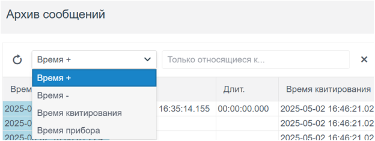

Система сообщений служит для фиксации в архиве сообщений определенных событий, таких включение/отключение технологических агрегатов, нарушение технологических коридоров и т. д. Дополнительно, фиксируемые в архиве сообщения, могут отправляться на email или на мобильный телефон в виде SMS сообщения.
Сообщения, которые требуют квитирования (подтверждение прочтения) попадают в список активных сообщений и выводятся оператору в строке сообщений. Вывод сообщений, требующих квитирования, может сопровождаться звуком для привлечения внимания.
Для просмотра архива сообщений нужно щелкнуть по кнопке вызова архива сообщений на панели инструментов:
В результате в рабочую область будет загружен архив накопленных сообщений, который имеет следующий вид:
Рисунок 36. Активное окно журнала сообщений
Сообщения выводятся в порядке от наиболее свежего к наиболее старому. По каждому сообщению доступна следующая информация:
Время прибора
Время регистрации события в СМиУ подстанции/Метка времени.
Вынесена информация о группе к которой относиться событие, например RZA - сообщение относится к сообщениям РЗА.
Время+
Время появления события или начала процесса.
Время-
Время окончания события или завершения процесса.
Длительность
Время, в течение которого событие или процесс происходил, рассчитывается как разница между Время+ и Время-.
Время квитирования
Время, когда оператор подтвердил или квитировал событие, заверив, что оно было замечено и принято к сведению.
Точка
Идентификатор или наименование объекта или параметра, с которым связано событие (например, датчик или контролируемая система).
Комментарий
Дополнительная информация, введённая оператором или автоматически системой, для разъяснения обстоятельств события.
Оператор
Идентификатор оператора, который принял участие в работе с событием (квитировал, добавил комментарий и т.д.).
Поиск сообщений в архиве
Для работы с архивом, содержащим большое количество сообщений можно использовать фильтры для выводимых на экран сообщений. Задание фильтров выполняется с помощью панели управления фильтрами, которая расположена в верхней части архива сообщений.
Основные возможности фильтров:
поиск по ключевым словам и фразам;
использование логических операторов (AND, OR);
сохранение и экспорт результатов.
Поддерживаются следующие виды фильтров:
Фильтр по дате:
Оператор может выбрать определённую дату или диапазон дат для отображения событий, произошедших в этот период. Это полезно для анализа событий за конкретный период времени, например, при расследовании инцидентов или мониторинге работы системы за определённые сутки или часы:
Постраничный просмотр
После выбора даты в нижнем поле отображаются страницы, по которым можно переходить нажимая на нужную страницу. Всего выводятся 50 строк сообщений на 1 страницу.
Фильтр по тексту:
Поиск событий, содержащих определённые ключевые слова или фразы в поле «Текст» сообщения. Это помогает быстро находить сообщения с определёнными параметрами или описанием, например, при расследовании конкретного инцидента или отслеживании состояния определённой точки.
- фильтр по текстовым полям кроме полей с датой/время.
Фильтр по типу:
События в журнале классифицируются по типу, что позволяет быстро фильтровать сообщения в зависимости от их значимости:
-Error — Ошибки, указывающие на критические неисправности или сбои, требующие немедленного вмешательства.
-Alarm — Аварийные события, сигнализирующие о необходимости принятия срочных мер для предотвращения опасных ситуаций или нарушений работы системы.
-Warning — Предупреждения о возможных проблемах или отклонениях от нормального режима работы, которые требуют внимания, но не являются аварийными.
-Info — Информационные сообщения о нормальных действиях или событиях, которые не требуют вмешательства.
-Oper — Операционные сообщения, связанные с действиями оператора или изменения в системе, вызванные операциями пользователя (например, квитирование событий или изменение настроек).
Фильтр по группе:
- фильтр по полю “Факт”.
Фильтр по времени
Для запуска фильтра необходимо щелкнуть по кнопке “Поиск”
Функция Auto-Update
Для мониторинга поступающих сообщений в реальном времени реализована опция Auto-Update. При выборе этой функции нет необходимости обновлять страницу для проверки получения новых сообщений.
Применение: мониторинг сообщений в реальном времени
Как использовать: нажать на флажок Auto-Update
Виртуальная клавиатура
Виртуальная клавиатура — это элемент интерфейса, отображающий клавиши на экране устройства для удобного и безопасного ввода текста без физической клавиатуры.
Применение: Для ввода данных без помощи физической клавиатуры, а также при необходимости внесения определенных символов.
Как использовать: Выберите иконку виртуальной клавиатуры. Нажмите на поле ввода данных. Нажимайте на клавиши виртуальной клавиатуры для ввода символов; набранные символы будут автоматически появляться в активном текстовом поле.
Рисунок 37. Виртуальная клавиатура
Отправка сообщений по email
Для дополнительного оповещения о новых сообщениях в системе, реализована функция отправки уведомлений по электронной почте через протокол SMTP.
Применение: Для оперативного оповещения пользователей о новых происшествиях в системе по почтовому сервису.
Как использовать: Нужно выбрать сообщение в журнале сообщений. В открывшемся окне нужно указать почту в поле “Выберите почту”. Сообщения могут отправляться выборочно в Журнале сообщений, либо автоматически, указав получателей заранее. Для автоматического уведомления нужно настроить сообщения в Studio.
Рисунок 38. Активное окно выбранного сообщения
Строка сообщений
Строка сообщений служит для индикации наличия сообщений требующих квитирования (подтверждение прочтения). При наличии таких сообщений строка содержит самое последнее. Вывод сообщения, требующего квитирования может сопровождаться звуком для привлечения внимания оператора.
ВНИМАНИЕ! При нажатии на сообщение оператор подтверждает, что ознакомился - квитирует сообщение. Квитированное сообщение удаляется из списка активных, но фиксируется в архиве сообщений
Для вывода списка всех активных на данный момент сообщений служит кнопка в левом верхнем углу, выше строки сообщения:
По щелчку на ней выводится окно со списком активных сообщений:
Рисунок 39. Окно активных сообщений
В левой части панели содержатся кнопки для квитирования сообщений:
Квитирование выделенных сообщений
Квитирование всех сообщений на текущей странице
В нижней части окна располагается панель для постраничного просмотра сообщений. По умолчанию отображаются последние 30 активных сообщений, которое можно изменить до 100 либо 10000. Для просмотра более ранних активных сообщений можно перейти на последующие страницы нажимая на нужную страницу:
В правом нижнем углу отображаются, справа– общее количество активных сообщений, слева – количество сообщений показанных в текущей странице:
Логические операторы, используемые в фильтрах
Логические операторы используются для создания условий фильтрации данных, позволяя находить нужные записи по заданным критериям.
Оператор AND (&) – логическое "И"
Оператор AND используется для фильтрации записей, которые одновременно соответствуют всем указанным условиям.
Другими словами, запись будет найдена только в том случае, если все условия верны.
ошибка AND критическая
Расшифровка:
Фильтр найдет только те события, которые содержат одновременно и "ошибка", и "критическая". Если одно из условий не выполняется, запись не попадет в выборку.
Оператор OR (|) – логическое "ИЛИ"
Оператор OR используется для фильтрации записей, которые соответствуют хотя бы одному из указанных условий.
Если выполняется хотя бы одно из условий, запись будет включена в результат.
ошибка OR предупреждение
Расшифровка:
Фильтр найдет события, в которых встречается либо "ошибка", либо "предупреждение". Если присутствует хотя бы одно из этих слов, запись будет отображена.
Примеры использования в поиске по тэгам:
Пример 1: (AKMOLA | ALMATY) & SCD
Что делает этот фильтр?
Ищет события, связанные либо с "AKMOLA", либо с "ALMATY"
Но обязательно содержит "SCD"
Расшифровка:
Если событие связано с AKMOLA и содержит SCD → оно будет найдено
Если событие связано с ALMATY и содержит SCD → оно будет найдено
Если в событии есть только "AKMOLA" или "ALMATY", но нет "SCD", оно не будет включено в результаты
Пример записей, которые попадут в выборку:
"AKMOLA SCD ERROR"
"ALMATY SCD WARNING"
Пример записей, которые НЕ попадут в выборку:
"AKMOLA ERROR" (нет SCD)
"ALMATY WARNING" (нет SCD)
"SCD ERROR" (нет AKMOLA и ALMATY)
Пример 2: AKMOLA | ALMATY
Что делает этот фильтр?
Находит все события, связанные с AKMOLA или ALMATY
Расшифровка:
Если в записи есть "AKMOLA", она попадет в выборку
Если в записи есть "ALMATY", она тоже попадет в выборку
Записи без этих ключевых слов не будут отображены
Пример записей, которые попадут в выборку:
"AKMOLA SCD ERROR"
"ALMATY SYSTEM WARNING"
"AKMOLA TEST EVENT"
Пример записей, которые НЕ попадут в выборку:
"ASTANA SCD ERROR"
"SYSTEM WARNING"
Таким образом:
Оператор & (AND) – ищет записи, содержащие все указанные условия
Оператор | (OR) – ищет записи, содержащие хотя бы одно из условий
Скобки () помогают группировать условия для более сложных фильтров
Пример сложного запроса:
(AKMOLA | ALMATY) & (SCD | SYSTEM)
Этот фильтр отберет события, связанные с AKMOLA или ALMATY, но только если они содержат либо SCD, либо SYSTEM.
Обработка и отображение сообщений RZA и OMP
Рисунок 40. Архив сообщений
При поступлении сообщений от подсистем RZA или OMP, они автоматически отображаются в списке активных сообщений и одновременно сохраняются в архив сообщений.
Сообщения выводятся в хронологическом порядке — от наиболее новых к более старым. Пользователь может изменить порядок отображения, отсортировав сообщения по времени:

Рисунок 41. Сортировка по времени
Сообщения выводятся в хронологическом порядке — от наиболее новых к более старым. Пользователь может изменить порядок отображения, отсортировав сообщения по времени.
Рисунок 42. Выбор функции фильтрации
Для удобства работы предусмотрены следующие функции фильтрации:
\- по источнику: RZA, OMP или оба источника одновременно;
\- по типу сообщения;
\- по ключевым словам в тексте сообщения.
Рисунок 43. Возможные типы сообщений
Каждое сообщение в журнале доступно для просмотра подробной информации. Для этого необходимо кликнуть по интересующему сообщению в списке.